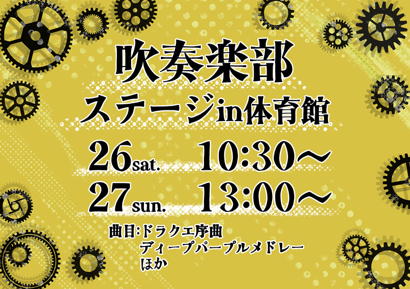
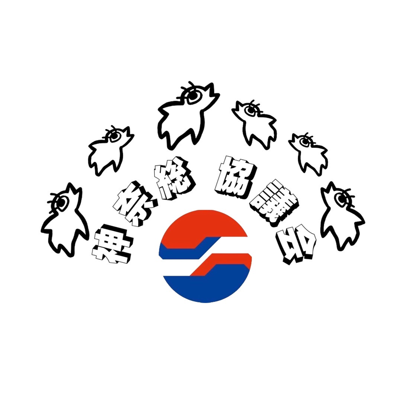

▽屋外団体
▽１階
▽２階
▽３階
▽４階
▽５階
▽６階
▽７階
▽８階
▽９階
▽１０階
公演団体
神工祭コスプレショー 2024

フリーカラオケ

DJ部
工業戦隊メガボルト
カラオケ大会

クラス対抗MTK

マレーシアフェア
吹奏楽部 吹奏楽部ステージ

ダンス部 ダンス公演
有志団体 マツケンサンバ2
有志団体 一人でオドループ
音楽部 演奏
屋外団体
ローゼンボアパン
定時制4年生 はしびろこう
PTA 焼きナポリタン
A31 回転シーソー&うどん
A32 じゃがバタ わたあめ
M31 焼きそば
E32 飲食
M32 ポップコーン ホットドック フランクフルト
E33 必食！マレーシア料理ミーゴレン
E31 かつやのやきとり
A31 回転シーソー
A32 芝生スライダー
A21 メリーゴーランド
１階
生徒会本部 スタンプラリー
PTA 陶芸教室作品展・ハンドメイド販売
たたら製鉄
E33 メガボルトSHOP
保健委員会 体力王への道～体力王に俺はなる～
２階
体育館は△公演団体へ
E33 VR/AI体験
３階
ものづくり研究部 作品展示・販売＆コマ体験
水球部 水球部招待試合
ロボティクス部 レゴを用いたロボット製作体験
図書委員会 和綴じ本販売と古本市
４階
M22 喫茶店＆フォトスポット
M21 ゲームパーク
M32 フォトスポット
M31 ドライビングシュミレーター

機械科展 ネームプレートと文策の販売、展示等
５階
定時制PTA
定時制2年生
定時制1年生
定時制写真部・イラスト同好会
定時制3年生
定時制ライフル射撃部
定時制建築研究部
定時制機械科・建設科・電気科展
６階
料理部 にぎりん喫茶
E13 映画上映 飲食販売
E12 昔のゲーム
E11 縁日
二渓会 大木理人アート展
生徒会本部 Kスポーツ大会
陶芸部 作品展示
７階
A22 ジェットコースター
M12 射的
A12 迷路体験
A11 HIRANO STORY MANIA
建設科展
８階
D2 Pontis Liber
D3 デカDeカフェ
イラスト・漫画同好会 部誌配布・グッズ販売
美術部 校内販売
デザイン科展・デザイン科カフェ
茶道部 お点前の披露
材料研究 清水一冴プロダクション
９階
E23 VS2-3

E22 倶楽部
E21 ラジコンレース
D1 ワークショップ
写真部 写真展

鉄道研究部
電気科展
クリエイション部
E31 総合ゲームセンター
電気研究同好会 電気工事、電子機械の展示
放送部 ステージ展示、Live放送
１０階
ワンダーフォーゲル部
E32 謎解き

M11 キッキングスナイパー
神奈川総合高校 神奈川総合高校紹介

eスポーツ部 格ゲー体験会
アマチュア無線部 無線機やドローン等の展示・交信体験
神奈川総合高校 COWBOY'S HAUNTS